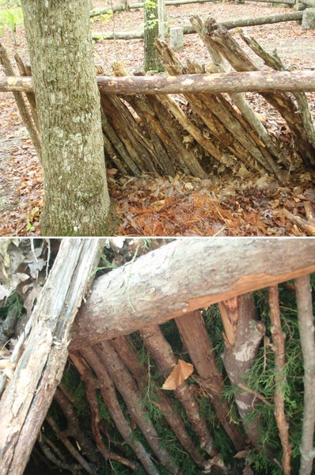

The Lean-To
The lean-to is one of the simplest and most frequently constructed primitive shelters. It can be set up in less than an hour with a variety of materials. This basic, one-sided design will give you a haven from wind and rain that the wilderness might throw at you.
Securely support a long, stout pole between two trees. Cover one side with poles, brush or branches. Then, heap leaves, grasses, palm fronds, or any other vegetation that is available on top. This shelter has two main flaws: 1) it doesn’t hold in heat well; 2) If the wind or rain changes direction you’ll no longer be sheltered. Think of it as a house with only one wall and half of a roof. It offers little in the way of insulation; and merely deflects wind and reflects the heat of the nearby fire.
On the upside, it’s quick and easy to build.